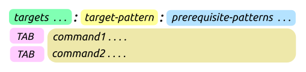

Static Pattern Rules

Pattern rule 은 아주 유용한 기능이지만
한가지 단점이 매칭되는 범위가 너무 넓다는 것입니다.
따라서 의도치 않게 매칭이 발생할 여지가 있기 때문에 주의할 필요가 있습니다.
%.o : %.c 패턴의 경우 다음과 같은 타겟들이 모두 매칭되어 실행될 수 있습니다.
%.o : %.c
main.o main.c
foo/main.o foo/main.c
foo/bar/main.o foo/bar/main.c
. . . .
앞에 디렉토리를 추가해서 제한을 하더라도 다음과 같은 타겟들이 모두 매칭이 됩니다.
BUILD/lib/%.o : lib/%.c
BUILD/lib/main.o lib/main.c
BUILD/lib/foo/main.o lib/foo/main.c
BUILD/lib/foo/bar/main.o lib/foo/bar/main.c
. . . .
또한 예를 들어 lib 디렉토리에 포함된 파일들을 두 그룹으로 나누어서
첫 번째 그룹에는 A rule 을 적용시키고 두 번째 그룹에는 B rule 을 적용시킬 수가 없습니다.
이것은 아주 안되는 것은 아닌데 다음과 같이 먼저 파일 이름을 변경한 후에 패턴을 적용해야 합니다.
BUILD/lib/A_%.o : lib/A_%.c # A 그룹에 적용
command ....
BUILD/lib/B_%.o : lib/B_%.c # B 그룹에 적용
command ....
static pattern rule 을 이용하면 이와 같은 문제들을 쉽게 해결할 수 있습니다. 이름에 포함된 static 의 의미는 pattern rule 을 작성할때 먼저 앞에 적용할 파일들을 명시한다는 뜻입니다. 따라서 해당 파일들에 대해서만 패턴이 적용되게 합니다. 다음 예제를 보면 왼쪽 match-anything pattern rule 의 경우는 아무 파일이나 전부 매칭이 되지만 static pattern rule 의 경우는 앞에 지정한 파일 외에는 매칭이 되지 않는 것을 볼 수 있습니다.
MAKEFLAGS := -rR OBJS := foo.o bar.o zoo.o
% : $(OBJS) : % :
@echo target : $@ @echo target : $@
####### 실행 결과 ####### ####### 실행 결과 #######
sh$ make foo.o bar.o zoo.o xxx.o sh$ make foo.o bar.o zoo.o xxx.o
target : foo.o target : foo.o
target : bar.o target : bar.o
target : zoo.o target : zoo.o
target : xxx.o make: *** No rule to make target 'xxx.o'. Stop.
다음은 실행파일을 빌드 하는데 static pattern rule 을 활용하는 예제입니다.
OBJS := foo.o bar.o zoo.o
OBJS := $(OBJS:%=BUILD/%) # BUILD/foo.o BUILD/bar.o ...
EXES := $(OBJS:%.o=%) # BUILD/foo BUILD/bar ...
all : $(EXES)
$(EXES) : % : %.o
@echo gcc -o $@ $+
.DEFAULT: ;
######### 실행 결과 #########
gcc -o BUILD/foo BUILD/foo.o
gcc -o BUILD/bar BUILD/bar.o
gcc -o BUILD/zoo BUILD/zoo.o
Grouping
하나의 디렉토리에 존재하는 파일들을 여러 그룹으로 나누거나 또는 각각 다른 디렉토리에 존재하는 파일들을 그룹으로 구성해 다른 rule 을 적용할 때도 static pattern rule 을 이용하면 간단히 해결할 수 있습니다.
# lib 하나의 디렉토리에 존재하는 파일들을 두 그룹으로 나누어 각각 다른 rule 을 적용
GROUP_A := BUILD/lib/aaa.o BUILD/lib/bbb.o BUILD/lib/ccc.o
GROUP_B := BUILD/lib/xxx.o BUILD/lib/yyy.o BUILD/lib/zzz.o
$(GROUP_A) : BUILD/%.o : %.c
command ....
$(GROUP_B) : BUILD/%.o : %.c
command ....
-------------------------------------------------------------------
# 각각 다른 디렉토리에 존재하는 파일들을 그룹으로 구성해 다른 rule 을 적용
GROUP_A := BUILD/aaa/hello.o BUILD/aaa/bbb/hello.o BUILD/ccc/hello.o
GROUP_B := BUILD/xxx/yyy/hello.o BUILD/zzz/hello.o
$(GROUP_A) : BUILD/%.o : %.c
command ....
$(GROUP_B) : BUILD/%.o : %.c
command ....
explicit 타겟 라인과 같이 사용
다음과 같이하면 각 실행파일별로 다른 오브젝트, 라이브러리 파일을 지정할 수 있습니다.
EXES:= foo bar zoo
$(EXES) : % : %.o
@echo gcc -o $@ $+
bar : aaa.o
zoo : aaa.o libxxx.a bbb.o libyyy.a ccc.o libxxx.a
%.o %.a : ;
###### 실행 결과 ######
sh$ make foo
gcc -o foo foo.o
sh$ make bar
gcc -o bar bar.o aaa.o
sh$ make zoo
gcc -o zoo zoo.o aaa.o libxxx.a bbb.o libyyy.a ccc.o libxxx.a
Static pattern rule 은 explicit rule 이다
static pattern rule 은 explicit rule 에서 사용되는 targets 에 패턴을 설정하는 형태입니다. 보기에는 pattern rule 처럼 생겼지만 make 실행 시에는 내부적으로 explicit rule 로 변경이 됩니다. 따라서 explicit rule 과 동일하게 targets 이름이 같으면 override 됩니다. 다음을 보시면 두 룰의 패턴은 틀리지만 targets 값이 같으므로 동일한 룰로 인식되어 override 되는 것을 볼 수 있습니다.
foo.o bar.o : %.o : %.c
@echo 11111
foo.o bar.o : %.o :
@echo 22222
%.c : ;
######## 실행 결과 ########
sh$ make
Makefile:6: warning: overriding recipe for target 'foo.o'
Makefile:3: warning: ignoring old recipe for target 'foo.o'
Makefile:6: warning: overriding recipe for target 'bar.o'
Makefile:3: warning: ignoring old recipe for target 'bar.o'
22222
target-specific 변수를 설정하는것도 explicit rule 과 동일하게 targets 에 설정합니다.
foo.o bar.o : %.o : %.c
@echo $@ : $< : $(CFLAGS)
foo.o bar.o : CFLAGS := -g
bar.o : CFLAGS := -O2
%.c : ;
######### 실행 결과 #########
sh$ make
foo.o : foo.c : -g
sh$ make bar.o
bar.o : bar.c : -O2
pattern rule 사용시 특정 파일에 대해서만 다른 rule 을 적용
다음과 같이하면 pattern rule 을 사용할 때 특정 파일에 대해서만 다른 rule 을 적용할 수 있습니다.
%.o : %.c # 디폴트로 사용되는 룰
@echo gcc -c -DFOO $< -o $@
foo.o bar.o : %.o : %.c # foo.o bar.o 에 대해서만 다른 룰을 적용
@echo gcc -c -DBAR $< -o $@
%.c : ;
######### 실행 결과 #########
sh$ make zoo.o
gcc -c -DFOO -o zoo.o zoo.c
sh$ make foo.o
gcc -c -DBAR -o foo.o foo.c
sh$ make bar.o
gcc -c -DBAR -o bar.o bar.c
double-colon rule 을 pattern 에도 적용할 수 있다
double-colon rule 을 이용하는 전, 후 처리 기능은 pattern rule 에서는 사용할 수 없는데 ( 동일한 패턴 룰은 override 되기 때문에 ) static pattern rule 을 이용하면 가능합니다.
TARGETS := foo.1 foo.2 ...
$(TARGETS) :: foo.% :
@echo $@ preprocessing ...
$(TARGETS) :: foo.% :
@echo $@ recipe ...
$(TARGETS) :: foo.% :
@echo $@ postprocessing ...
######### 실행 결과 #########
sh$ make -j8 foo.1
foo.1 preprocessing ...
foo.1 recipe ...
foo.1 postprocessing ...
sh$ make -j8 foo.2
foo.2 preprocessing ...
foo.2 recipe ...
foo.2 postprocessing ...
static, shared 라이브러리 동시에 빌드하기
다음은 static pattern rule 을 사용하여 라이브러리를 빌드하는 예제입니다
( 아래와 같은 경우는 pattern rule 로도 가능합니다 ).
static 라이브러리를 위한 오브젝트 파일은 기존과 동일하게 .o 확장자를 사용하고
shared 라이브러리를 위한 오브젝트 파일은 .lo 확장자를 이용해서 빌드합니다.
static pattern rule 에서 prerequisites 부분은 pattern rule 에서와 같이
%.c | $(BUILD_DIR)/$(SRC_DIR) 부분이 됩니다.
%.c 에 매칭되는 소스파일이 이미 존재하므로 %.o 타겟 파일 생성을 위한
recipe 가 실행되기 전에 먼저 디렉토리 생성을 위한 $(BUILD_DIR)/$(SRC_DIR) 룰이 실행됩니다.
# 먼저 touch 명령으로 aaa.c bbb.c ccc.c 파일을 생성하고 테스트하세요
BUILD_DIR := BUILD
SRC_DIR := lib/foo
SRCS := aaa.c bbb.c ccc.c
OBJS := $(addprefix $(BUILD_DIR)/$(SRC_DIR)/,$(SRCS:.c=.o))
OBJS_SO := $(OBJS:.o=.lo)
NAME := libfoo
STATIC_LIB := $(BUILD_DIR)/$(SRC_DIR)/$(NAME).a
SHARED_LIB := $(BUILD_DIR)/$(SRC_DIR)/$(NAME).so
.PHONY: all $(NAME).a $(NAME).so
all : $(STATIC_LIB) $(SHARED_LIB)
$(NAME).a : $(STATIC_LIB)
$(NAME).so : $(SHARED_LIB)
########### static library ###########
$(OBJS) : $(BUILD_DIR)/$(SRC_DIR)/%.o : %.c | $(BUILD_DIR)/$(SRC_DIR)
$(CC) -c $(CFLAGS) $< -o $@
$(STATIC_LIB) : $(OBJS)
$(RM) $@
$(AR) rcs $@ $^
########### shared library ###########
$(OBJS_SO) : $(BUILD_DIR)/$(SRC_DIR)/%.lo : %.c | $(BUILD_DIR)/$(SRC_DIR)
$(CC) -c -fPIC $(CFLAGS) $< -o $@
$(SHARED_LIB) : $(OBJS_SO)
$(CC) -shared -Wl,-soname,$(NAME).so $^ -o $@
########################################
$(BUILD_DIR)/$(SRC_DIR) : ;@mkdir -p $@
clean :
$(RM) $(OBJS) $(OBJS_SO) $(STATIC_LIB) $(SHARED_LIB)
Quiz
Shared library 에서 사용되는 코드는 메모리의 임의의 주소에서 실행될 수 있어야 하기 때문에
컴파일 시에 -fPIC 옵션을 주어서 Position Independent Code 로 만드는데요.
shared library 를 만들 때가 아닌 경우에도 -fPIC 옵션을 사용할 수 있을까요?
위치 독립적인 코드를 만드는 옵션에는 실행파일을 만들때 사용되는
-fPIE( Position Independent Executables ) 과 shared library 를 만들때 사용되는-fPIC( Position Independent Code ) 가 있습니다.
먼저
-fPIE,-fPIC옵션을 사용하지 않고 컴파일한 오브젝트 파일, static library 는 non-PIE 실행파일을 빌드하는 데만 사용할 수 있습니다. 만약에 PIE 실행파일을 빌드하는데 사용할 경우 오류가 발생할 수 있습니다.
-fPIE옵션을 사용해 컴파일한 오브젝트 파일, static library 는 PIE 실행파일을 빌드할 때뿐만 아니라 non-PIE 실행파일을 빌드하는데도 사용될 수 있습니다. 하지만 shared library 를 만드는 데는 사용할 수 없습니다.
-fPIC옵션을 사용해 컴파일한 오브젝트 파일, static library 는 non-PIE, PIE 실행파일 뿐만 아니라 shared library 를 만드는데도 모두 사용할 수 있습니다.코드가 임의의 주소에서 실행되려면 관련 테이블을 만들어서 indirection 을 해야 하므로 코드 사이즈가 커지고 실행 속도가 느려지는 단점이 있습니다. 하지만 64bit CPU 와 컴파일러 지원에 의해서 지금은 큰 차이는 없다고 합니다. 따라서 요즘에는 컴파일 시에 기본적으로
-fPIC옵션을 사용하는 경우도 있습니다. 그리고 대부분의 리눅스가 보안과 관련해서-fPIE옵션을 사용하고 있어서 실행파일이 매번 다른 주소에서 실행이 됩니다.